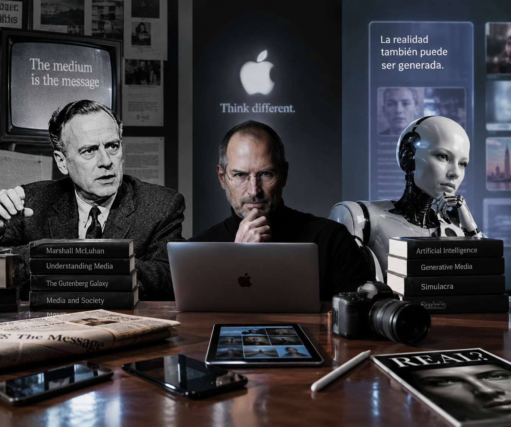

En 1964, Marshall McLuhan acuñaba una de las frases más importantes en la teoría de la comunicación dentro de su libro Understanding Media: The Extensions of Man (McLuhan, 1964). Todos la conocemos: el medio es el mensaje.
Aunque la idea parece contraintuitiva en un principio, el punto cardinal de McLuhan es que tendemos a fijarnos únicamente en el contenido de un medio (en aquel entonces un programa de televisión, una noticia o una canción), pero lo que realmente transforma a la sociedad es la naturaleza del medio en sí (McLuhan & Fiore, 1967).
De tal suerte que el contenido pasa a ser secundario. Pensamos que el "mensaje" de la televisión son los programas que transmite; para McLuhan, el verdadero mensaje es la televisión como tecnología: basta pensar cómo cambió la dinámica familiar al reunirse en la sala, cómo redujo los tiempos de atención o cómo transformó la política. Si extrapolamos este pensamiento al teléfono celular, nos daremos cuenta de que McLuhan encontró una idea universal y atemporal.
Para ilustrarlo, el propio autor usaba el ejemplo de la luz eléctrica: la bombilla no tiene "contenido" (a diferencia de un periódico o una carta), pero su sola presencia permite que existan cirugías nocturnas, eventos deportivos y fábricas activas las 24 horas. La bombilla cambia el comportamiento humano y la estructura de la sociedad; ese es el mensaje.
En el mundo actual la premisa cobra aún más fuerza. El "mensaje" en TikTok no es el baile o el meme específico que ves, sino cómo la plataforma reconfigura tu capacidad de atención a través de un algoritmo de video corto. El "mensaje" de un smartphone no es el texto de WhatsApp que acabas de enviar, sino cómo el dispositivo rompió la frontera entre el trabajo y la vida personal al mantenerte siempre conectado.
El paciente cero, el origen de este lenguaje, está en la mente de Steve Jobs y las Keynotes de Apple (Jobs, 2007). Jobs no solo creó productos; creó un subgénero del arte escénico corporativo y el estándar de cómo se "comunica la innovación".
Jobs formalizó una receta dramática clonada hasta el cansancio:
Esa construcción escénica tan particular no pasó desapercibida. TED tomó esa misma narrativa de revelación y la empaquetó para la ciencia, el diseño y la cultura ("ideas worth spreading"), dándole un aura académica sobre un escenario circular (TED Conferences, s. f.). Tiempo después, las startups y los coaches clonaron la estética de TED para vender desde criptomonedas hasta cursos de superación personal en YouTube o podcasts con luces de neón.
Aquí es donde la historia se vuelve retorcida: este formato se convirtió en un lenguaje estético de autoridad. Es McLuhan en su estado más puro: el contenido pasa a segundo plano porque el medio, por el simple hecho de estar construido así, inyecta validez, seriedad y veracidad (Debord, 1967). Y, evidentemente, se abusó de ello.
En Shenzhen, China —la meca tecnológica que alberga a gigantes como DJI, Xiaomi o Huawei—, existe un terreno fértil tanto para la innovación real como para la creación de productos absurdos dignos de un infomercial de madrugada. Ahí se han diseñado estudios destinados exclusivamente a replicar el look Jobs-TED. Lo curioso es que no hay público. Las cámaras jamás enfocan a la audiencia porque el foro está vacío, pero para el espectador en internet es casi imposible notarlo. Todo lo demás está ahí: el orador minimalista con micrófono de solapa, el control de diapositivas en la mano, el escenario semicircular, la luz cenital, las diapositivas limpias y la oratoria de héroes y villanos. Una puesta en escena armada no para comunicar una idea, sino para fabricar un significante de "verdad e innovación".
"El formato de TED involucionó. Nació como un filtro de calidad sostenido por una curaduría rigurosa e 'ideas que valen la pena'. Pero en el momento en que la estética de una charla se volvió fácilmente replicable, el concepto se democratizó tanto que derivó en la pura escenificación del conocimiento."
El formato de TED involucionó. Nació como un filtro de calidad sostenido por una curaduría rigurosa e "ideas que valen la pena". Pero en el momento en que la estética de una charla se volvió fácilmente replicable, el concepto se democratizó tanto que derivó en la pura escenificación del conocimiento. Ya no se necesita el rigor; bastan la iluminación correcta y el tono de voz adecuado para parecer un visionario. La misma organización propició este fenómeno al franquiciar sus eventos bajo la marca TEDx.
Ocurre entonces un sesgo de autoridad visual: el cerebro del espectador toma un atajo cognitivo y concluye que "si se ve como TED, suena a TED y se viste como TED, debe ser verdad y profundo". Se vende legitimidad antes de pronunciar la primera palabra.
Seguro han escuchado la frase "soy culpable de mi algoritmo". Básicamente significa que cada like y cada segundo de atención que le dedicamos a una publicación van moldeando un entorno digital único. Hace tiempo, quienes no dominaban el entorno digital solían decir: "es que lo vi en internet". Hoy esa frase carece de sentido. Las publicaciones que les aparecen a mi hija o a mi padre rara vez coinciden con las mías, a menos que compartamos un tema muy específico.
Mi papá ha dejado fluir su algoritmo de acuerdo a sus preferencias. Diariamente me toca observar lo que consume en la televisión del comedor, donde he detectado dos vertientes claras: una sobre narrativa y otra sobre política.
Existe una fauna heterogénea de canales en YouTube con un patrón muy claro —por mencionar algunos: Pulso Urgente MX, Alerta Informativa o México Despierta—. A menos que los mueva una curiosidad casi insana, no necesitan verlos. Estos canales producen volúmenes astronómicos de contenido, en su mayoría generado con Inteligencia Artificial, enfocado en el accionar del gobierno de México bajo un positivismo ciego y servil. Convierten cualquier decisión oficial en épicas victorias en materia de comercio, política exterior o sociedad.
Son "reportajes" que vanaglorian la gestión gubernamental a niveles desmedidos, reinterpretando o tergiversando datos, notas de prensa o las conferencias matutinas de la presidencia. En lo visual, son un engrudo de fragmentos sacados de noticieros tradicionales, clips oficiales, imágenes generadas por IA y lo que encuentren a su paso. Aquí opera la misma lógica que vimos con la fórmula Jobs-TED: crean un mensaje y moldean el medio para fabricar validación.
Basta estar medianamente informado para detectar la falsedad. Abundan, por ejemplo, los videos que pintan las negociaciones del tratado comercial con Estados Unidos como un triunfo apabullante que puso contra la pared a Donald Trump, cuando la realidad apunta a que las presiones arancelarias y las amenazas de cancelación convirtieron el acuerdo, cuando mucho, en un ejercicio de supervivencia.
Observar este fenómeno despierta preguntas inevitables: ¿Quién los produce? ¿Quién es el público objetivo? ¿Para qué? Al revisar la caja de comentarios se descubre un pantano de cuentas automatizadas e interacciones fabricadas. Pero si este material no alcanzara a personas reales, la inversión carecería de sentido. Esto sugiere que estamos ante una propaganda con tintes absolutistas o, en el menor de los casos, ante un intento desmedido por contrarrestar la cobertura del periodismo profesional.
El fenómeno inquieta por lo barato, masivo y sofisticado que se ha vuelto. Es el meollo de la propaganda algorítmica de última generación (Han, 2022).
Para entender quién está detrás, a quién impacta y qué persigue esta maquinaria, es necesario desarmar la lógica de estas granjas de contenido automatizado.
En primer lugar, aunque los comentarios parezcan un diálogo entre bots, el contenido alcanza a usuarios de carne y hueso. El caso de mi padre no es aislado: los algoritmos de recomendación buscan maximizar el tiempo de permanencia. A ciertos sectores —adultos mayores, personas que consumen información de fondo mientras realizan otras tareas o simpatizantes del régimen— la plataforma les construye una burbuja de resonancia. Para ese público, el reporte narrado por una voz sintética firme, respaldado por música dramática y titulares estridentes, funciona igual que el escenario circular de TED: utiliza la apariencia del noticiero tradicional para inyectar autoridad. Si suena a boletín de última hora, el cerebro lo procesa como una noticia trascendente.
En segundo lugar, respecto a la autoría y los fines, convergen dos modelos que se alimentan mutuamente:
Por un lado opera el interés económico de los clickbaiters. Muchas veces no existe una mente ejecutiva estatal detrás de cada cuenta, sino creadores independientes o agencias pequeñas aprovechando la IA para monetizar. Con herramientas de generación de guiones, clonación de voz y edición automatizada, una sola persona puede publicar decenas de videos al día en múltiples canales a un costo de producción casi nulo. Al apelar al sesgo de confirmación y al fervor partidista, cosechan cientos de miles de reproducciones por las que la plataforma paga publicidad. Es la democratización de la basura informativa por puro lucro.
Por otro lado, opera el interés político mediante la guerra de información y el astroturfing —término que define la simulación deliberada de un movimiento orgánico o de base ciudadana—. Comprar comentarios e interacciones no busca convencer a las máquinas, sino engañar al algoritmo para que interprete el contenido como un fenómeno viral y se lo recomiende a usuarios reales, al tiempo que fabrica una falsa sensación de consenso. Si un espectador entra y encuentra cientos de mensajes de respaldo, la arquitectura psicológica del entorno lo lleva a asumir que esa es la postura mayoritaria. Es la puesta en práctica del "Flood the zone with shit", la estrategia propagandística orientada a saturar el ecosistema mediático con tanto ruido que la audiencia termine exhausta, incapaz de distinguir la verdad de la manipulación (Pomerantsev, 2019).
En ambos casos, el medio ha sido despojado del rigor, pero conserva intacto el disfraz. Se utiliza la envoltura visual y sonora en la que fuimos educados a confiar —el escenario circular con iluminación impecable o la cortinilla estridente del noticiero— para colar contenido artificial y carente de fondo.
Este fenómeno no es exclusivo de un país o un régimen. En Estados Unidos, este mismo ecosistema es gigantesco, infinitamente más agresivo y opera impulsado por la profunda polarización entre demócratas y republicanos. Cuando la simulación del medio se cruza con grupos radicales y discursos fringe, el panorama adquiere dimensiones de paranoia colectiva.
En el espectro de la extrema derecha (Alt-Right), organizaciones nacionalistas, milicias ciudadanas o grupos como los Proud Boys o Patriot Front construyen sus propios canales de distribución bajo narrativas de resistencia armada, la sacralización de la Segunda Enmienda y teorías conspirativas de sustitución cultural frente a un supuesto "Estado Profundo" (Deep State). Por el otro lado, en ciertos sectores de la extrema izquierda o células anarquistas, las narrativas se moldean en torno al antifascismo radical, el colapso corporativo y la confrontación directa contra el aparato policial.
Sin embargo, lo verdaderamente alarmante no es solo la existencia de estas facciones, sino cómo el lenguaje de la desinformación masiva borró la frontera entre el folclore del internet más oscuro y la política institucional. Fenómenos como QAnon o la paranoia sobre un gobierno sombra dejaron de ser foros marginales para convertirse en discursos articulados en el centro del debate público (Han, 2022). Mediante granjas de bots, campañas de astroturfing y medios hiperpartidistas, se exacerban las guerras culturales sobre raza, género, economía y soberanía para radicalizar a las audiencias.
El resultado es un tejido social tan fracturado por el ruido que la brecha es aprovechada por agencias de inteligencia extranjeras, las cuales alimentan simultáneamente el fuego de ambos bandos (Pomerantsev, 2019). No necesitan inventar el conflicto; basta con operar los controles del medio para que la sociedad se devore a sí misma en una espiral de desconfianza.
Al final, la profecía de McLuhan se cumple con una precisión aterradora: la tecnología y la estética de la plataforma moldearon la psique de las masas. La combinación entre tecnología, psicología colectiva y paranoia política convirtió al medio no solo en el mensaje, sino en el escenario perfecto para la escenificación de la realidad (McLuhan, 1964; Debord, 1967).
Debord, G. (1967). La sociedad del espectáculo. Buchet-Chastel.
Han, B.-C. (2022). Infocracia: La digitalización y la crisis de la democracia. Editorial Taurus.
Jobs, S. (2007, 9 de enero). Macworld 2007 Keynote Address [Discurso en video]. Apple Inc. https://www.youtube.com/watch?v=VquadrqJBU4
McLuhan, M. (1964). Understanding Media: The Extensions of Man. McGraw-Hill.
McLuhan, M., & Fiore, Q. (1967). The Medium is the Massage: An Inventory of Effects. Bantam Books.
Pomerantsev, P. (2019). This Is Not Propaganda: Adventures in the War Against Reality. PublicAffairs.
TED Conferences. (s. f.). TED: Ideas Worth Spreading. https://www.ted.com/